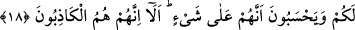

ONLAR GERÇEKTEN
YALANCIDIRLAR
14. Allah’ın kendilerine gazab ettiği bir topluluğu dost edinenleri görmedin mi?
Onlar ne sizdendirler ne de onlardan. Bilerek yalan yere yemin ediyorlar.
15. Allah onlara çetin bir azap hazırlamıştır. Gerçekten onların yaptıkları şey çok
kötüdür!
16. Onlar yeminlerini kalkan yapıp Allah’ın yolundan alıkoydular. Bu yüzden
onlara küçük düşürücü bir azap vardır.
17. Onların malları da oğulları da Allah’a karşı kendilerine bir fayda vermez.
Onlar cehennem ehlidirler. Orada ebedî kalacaklardır.
18. O gün Allah onların hepsini yeniden diriltecek, onlar da dünyada size yemin
ettikleri gibi, O’na yemin edeceklerdir. Kendilerinin bir şey (hakikat) üzerinde
olduklarını sanırlar. İyi bilin ki onlar gerçekten yalancıdırlar.
“Allah’ın kendilerine gazab ettiği bir topluluğu dost edinenleri görmedin mi?”
Âyet-i kerimenin başındaki soru edatı, yahûdîleri dost edinen, onlarla nasihatleşen,
öğütlerini dinleyen ve müminlerin sırlarını onlara taşıyan münâfıkların durumlarına ve
şaşırtıcı hareketlerine hayreti ifâde etmektedir. Hitâb, Rasûlullah’a veya işitme ve
düşünme kabiliyeti olan herkesedir. Rüyet kökünden gelen fiilin ilâ harfi ile müteaddî
olması, onun görme ve bakma anlamında olduğu içindir. Yâni “görmedin mi?” demektir.
Tevellâ fiili dost edinme anlamındaki müvâlât kökündendir, yoksa yüz çevirme
mânâsına değildir. Gazaba uğrayanlar, “Allah’ın lânetlediği ve gazab ettiği” (el-
Maide, 5/60) âyet-i kerimesinde haber verildiği gibi yahûdilerdir. Gazab, başlangıç
noktasında intikam alma irâdesi bulunan nefisteki hareket demektir. Allah’a nisbetle
gazab, rızânın zıddıdır. Ya da gazab intikam alma irâdesidir yahut bizzat tehdidi